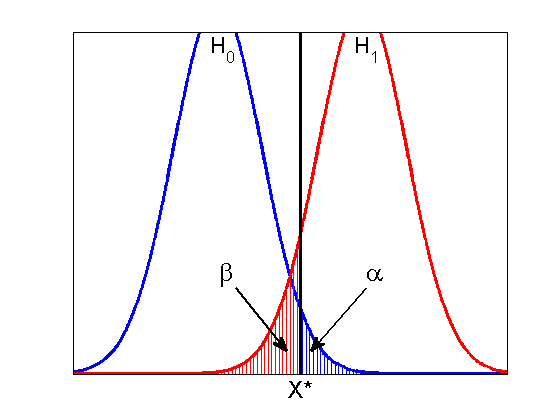

Illustration of the Neyman-Pearson testing paradigm
xmin = -4;xmax = 8;
ymin = 0;ymax = 0.3;
res = 0.01;
domain = xmin:res:xmax;
sigma = 1.5;
f1 = @(x)gaussProb(x,0,sigma);
f2 = @(x)gaussProb(x,4,sigma);
linesize = {'LineWidth',2.5};
plot(domain,f1(domain),'-b',linesize{:});
hold on;
plot(domain,f2(domain),'-r',linesize{:});
axis([xmin,xmax,ymin,ymax]);
plot([2.3;2.3],[0;0.5],'-k',linesize{:});
shading = 0.1;
shade(f2,ymin,xmin,2.25,'r',shading);
shade(f1,ymin,2.35,xmax,'b',shading);
set(gca,'XTick',2.3,'YTick',[],'XTickLabel',{'X*'},'FontSize',18);
annotation(gcf,'textarrow',rel2absX([0.5,1.9]),rel2absY([0.075,0.02]),...
'TextEdgeColor','none',...
'TextLineWidth',2,...
'FontSize',20,...
'String',{'\beta'},...
'LineWidth',2);
annotation(gcf,'textarrow',rel2absX([4.1,2.6]),rel2absY([0.075,0.02]),...
'TextEdgeColor','none',...
'TextLineWidth',2,...
'FontSize',20,...
'String',{'\alpha'},...
'LineWidth',2);
annotation(gcf,'textbox',[rel2absX(-0.4) rel2absY(0.275) 0.0403 0.07213],'String',{'H_0'},...
'FontSize',16,...
'FitBoxToText','off',...
'LineStyle','none');
annotation(gcf,'textbox',[rel2absX(3.6) rel2absY(0.275) 0.0403 0.07213],...
'String',{'H_1'},...
'FontSize',16,...
'FitBoxToText','off',...
'LineStyle','none');
